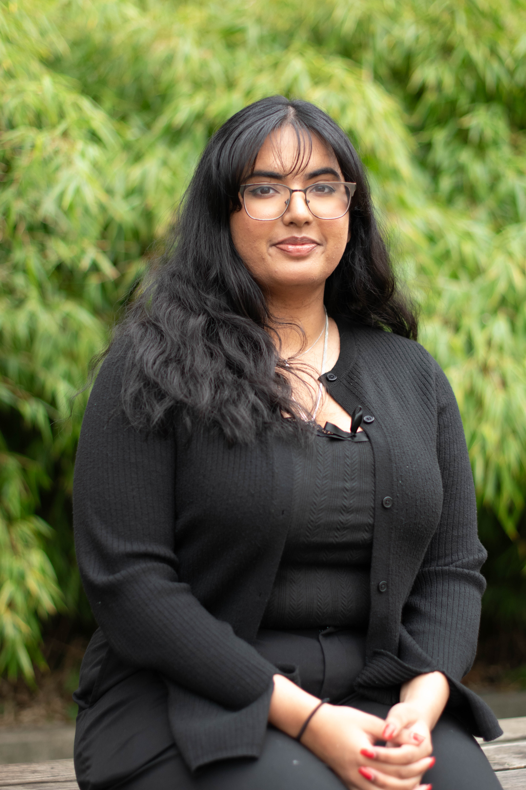

Management Information Systems
Minors in Computer Science, Data Science, Math
Class of 2025
I recognized joining ACM-W as an opportunity to engage with the UWB community for a specific reason. I'm passionate about creating a more inclusive environment for women in STEM, as I believe in the importance of diversity in these fields. This goal aligns with my career ambitions in software engineering and reflects my dedication to making a meaningful impact.
Connect with me on LinkedIn
